Museum Blanke – Haushaltsgeräte mit Kurbel
Diese Rubrik zeigt mechanische Haushaltsgeräte, die ohne Strom betrieben werden – durch Handkurbel oder Drehmechanik. Die Geräte sind chronologisch nach Baujahr sortiert. (Klicke auf ein Bild, um es zu vergrößern.)
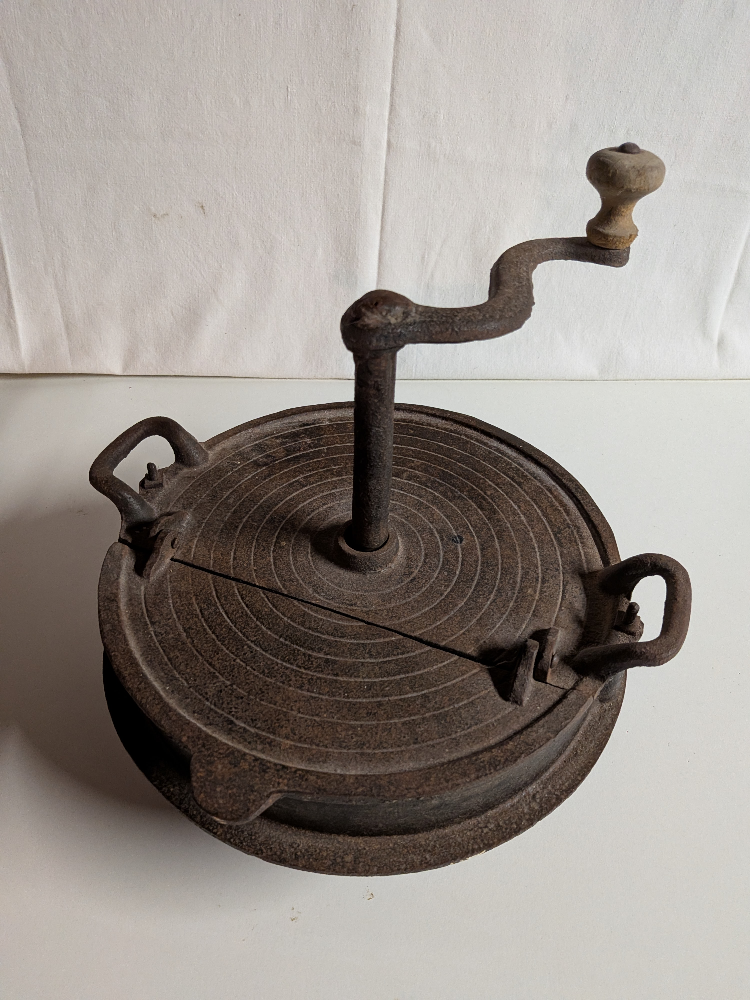
Kaffeeröster aus Gusseisen (Größe 3, ca. 1900–1920)
Früher Haushaltsröster für Rohkaffee, gefertigt aus massivem Gusseisen. Der Röster wird auf eine Herdplatte oder über eine Glut gestellt, während die Kurbel mit Holzgriff die Bohnen gleichmäßig bewegt. Die Prägung „3“ bezeichnet die Größe des Geräts. Hersteller unbekannt – ähnliche Modelle stammen von Pe De, Alexanderwerk oder KyM. Ein typisches Beispiel für die häusliche Kaffeezubereitung vor der Elektrifizierung.

Bohnenschneider Pe De (Holz-Metall-Ausführung, ca. 1910–1925)
Frühes Modell des Bohnenschneiders der Marke Pe De (Peter Dienes, Remscheid). Das Gerät besteht aus einem Holzrahmen mit Metallmessern und Kurbelmechanik. Es wird mit einer Schraubzwinge am Tisch befestigt und schneidet Stangenbohnen in feine Streifen – ein typisches Küchenwerkzeug der Vorkriegszeit.
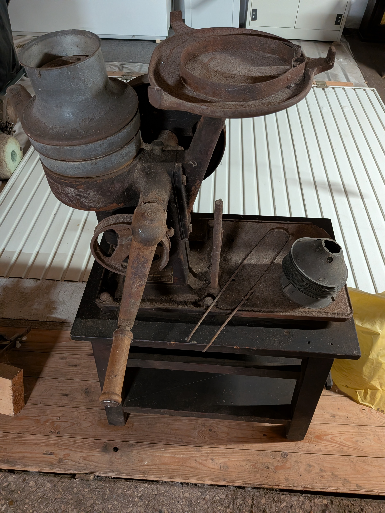
Milchzentrifuge / Milchseparator Alfa Laval Modell 23 (ca. 1920–1930)
Handbetriebener Milchseparator der Firma Alfa Laval, Modell 23, gefertigt in der Berliner Niederlassung Berlin NW 40, Döberitzer Straße 2. Die stündliche Leistung beträgt etwa 150 Liter, bei einer optimalen Kurbelgeschwindigkeit von 60 U/min, die über ein internes Getriebe eine hohe Trommeldrehzahl und damit die notwendige Fliehkraft erzeugt.
Das ausgestellte Exemplar steht auf einem stabilen Holzrahmen, wie er für frühe Haushaltsseparatoren typisch war. Die Milch wird in die Schüssel gegeben, in der rotierenden Trommel durch Fliehkraft in Rahm und Magermilch getrennt und über zwei getrennte Ausläufe abgeführt – ein wichtiges Gerät für die Butter- und Rahmproduktion auf Bauernhöfen der 1920er und 1930er Jahre.
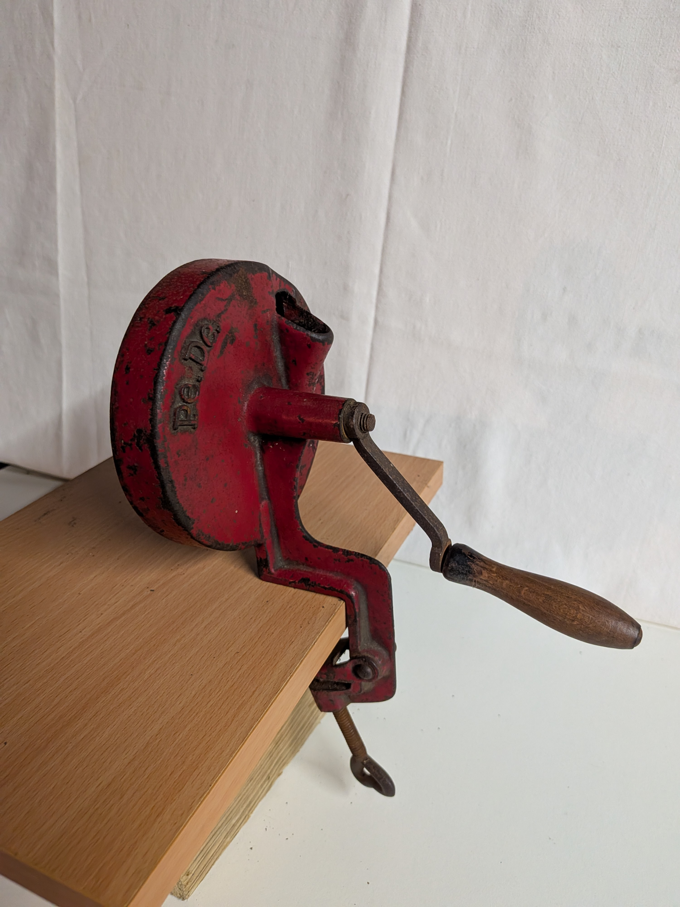
Bohnenschneider Pe De (Gussmodell, ca. 1930–1940)
Spätere Ausführung des Bohnenschneiders von Pe De mit lackiertem Gussgehäuse in Rot. Die Firma Peter Dienes war bekannt für hochwertige Metallverarbeitung und fertigte neben Kaffeemühlen auch Küchenmaschinen. Dieses Modell zeigt die Weiterentwicklung hin zu stabilen, hygienisch lackierten Geräten der Zwischenkriegszeit. Die Kurbel treibt ein rotierendes Messerwerk an, das die Bohnen präzise in gleichmäßige Streifen schneidet.
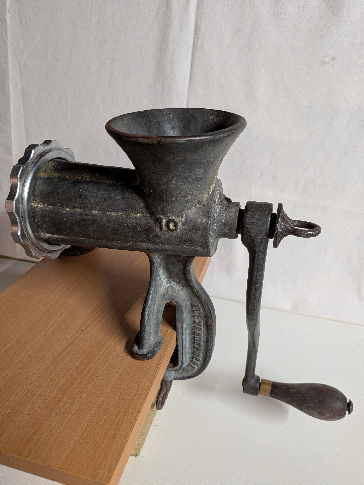
Fleischwolf Alexanderwerk 10 (ca. 1930–1945)
Kompakter Fleischwolf aus Gusseisen für den Haushalt. Typisch für die Vorkriegs- und Kriegszeit.
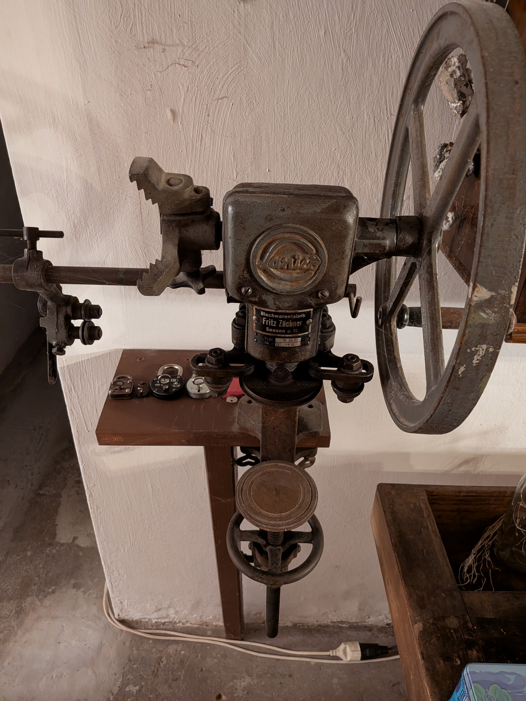
Dosenverschlussmaschine Lanico TR38 / Trumpf 38 (ab 1938)
Halbautomatische Dosenverschlussmaschine des Bremer Herstellers Lanico Maschinenbau GmbH. Das Modell TR38 – auch unter der Bezeichnung „Trumpf 38“ bekannt – wurde ab 1938 gefertigt und diente zum Verschließen von Konservendosen in Haushalten und kleinen Betrieben.
Auf dem Typenschild vieler Geräte erscheint die Firma Fritz Züchner aus Berlin, die keine Maschinenbaufirma, sondern ein bedeutender Blechdosenhersteller war. Züchner trat hier als Vertriebspartner auf und brachte die Maschinen unter eigenem Namen in den Handel. Die Kurbel bewegt den Verschlusskopf, der den Deckel fest auf die Konservendose presst – ein typisches Gerät der Übergangszeit zwischen handbetriebenen und industriellen Konservierungsmaschinen.
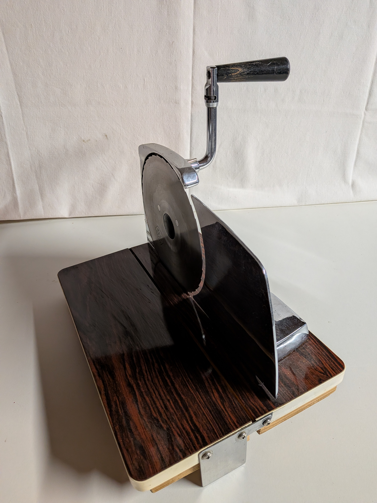
Brotschneider (ca. 1940–1950)
Mechanischer Brotschneider mit Kurbelantrieb. Schneidet Brot gleichmäßig in Scheiben – ein typisches Gerät der frühen Nachkriegszeit.
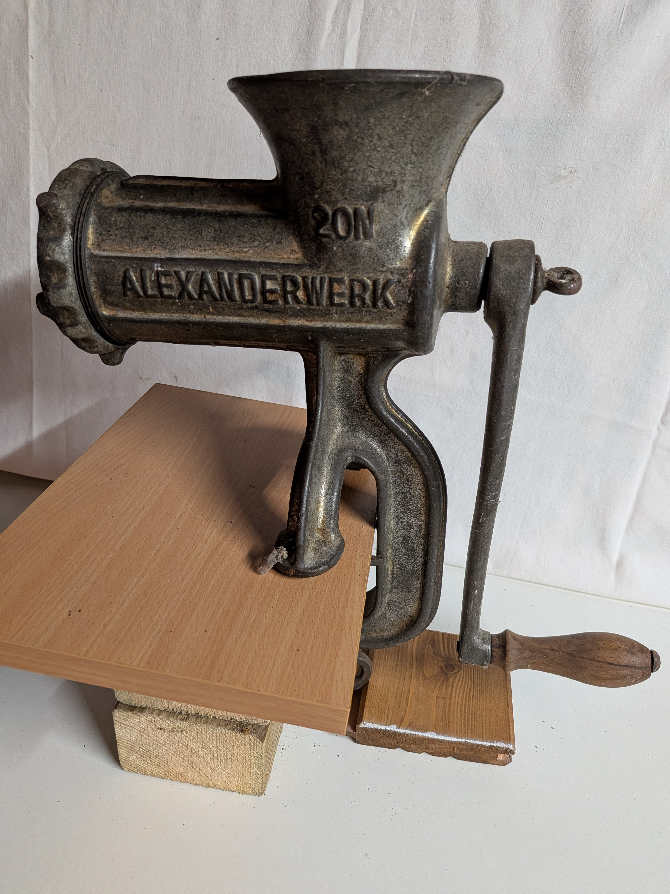
Fleischwolf Alexanderwerk 20N (ca. 1940–1955)
Robuster Fleischwolf für Haushalt und kleine Metzgereien. Nachkriegsmodell mit Holzkurbel.
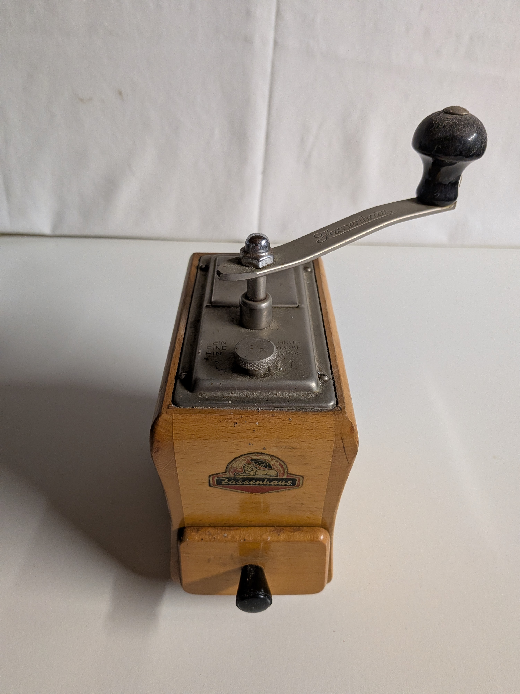
Kaffeemühle Zassenhaus (ca. 1950–1960)
Handkaffeemühle der Firma Zassenhaus, der ältesten Kaffeemühlenmanufaktur Deutschlands. Das typische Emblem mit dem Löwen unter dem Regenschirm sowie die geschwungene Kastenform aus hellem Buchenholz weisen auf eine Fertigung in den 1950er bis 1960er Jahren hin. Das innenliegende Stahl-Mahlwerk und die solide Holzverarbeitung machen diese Mühlen bis heute beliebt – ein klassisches Beispiel für hochwertige deutsche Haushaltsgeräte der Nachkriegszeit.
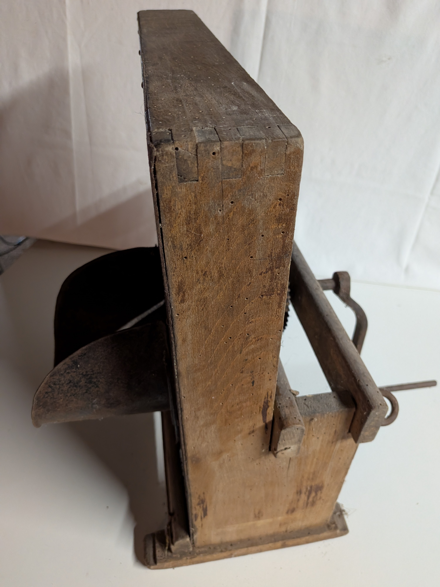
Kohlschneider (ca. 1950–1960)
Kurbelbetriebener Hobel zum Schneiden von Weißkohl für Sauerkraut. Das Gerät arbeitet mit scharfen Messern und einer stabilen Führung – typisch für die Sauerkrautproduktion im eigenen Haushalt.
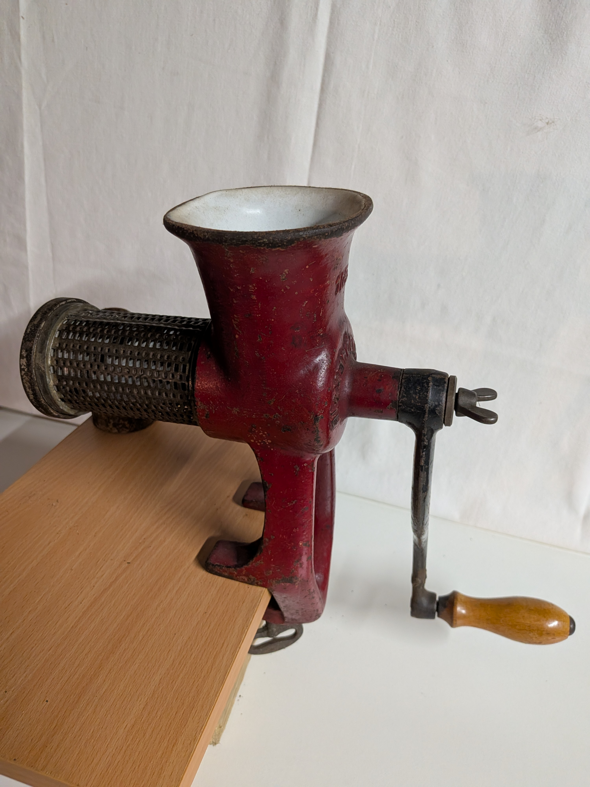
Kartoffelpüreegerät (ca. 1950–1960)
Mechanisches Gerät zum Pressen von Kartoffeln – Vorläufer moderner Kartoffelpressen. Die Kurbel drückt die gekochten Kartoffeln durch ein gelochtes Sieb und erzeugt feines Püree.
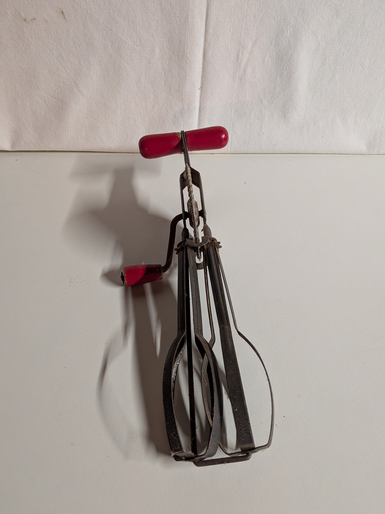
Schneebesen mit Kurbel (ca. 1950–1960)
Kurbelbetriebener Schneebesen mit zwei Rührflügeln. Ideal zum Schlagen von Sahne oder Eiweiß – ein beliebtes Küchenwerkzeug der 1950er Jahre.
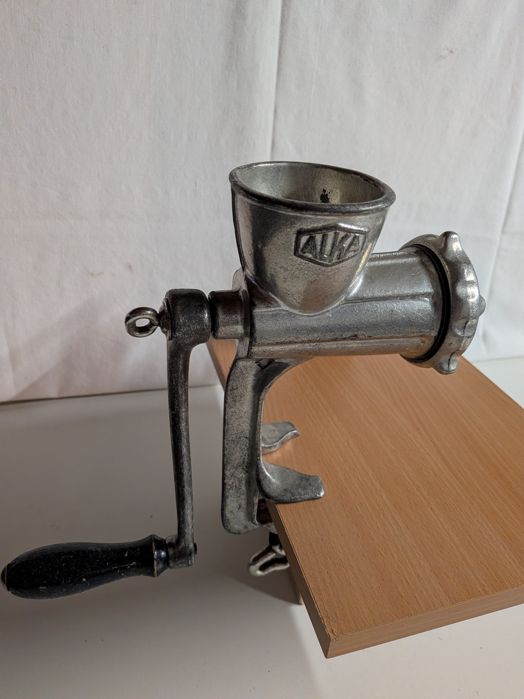
ALKA Kurbelgerät (ca. 1950–1965)
Mechanisches Haushaltsgerät der Marke ALKA. Vermutlich Reibe- oder Schneidmaschine mit Kurbelantrieb – solide Metallausführung mit Holzgriff.
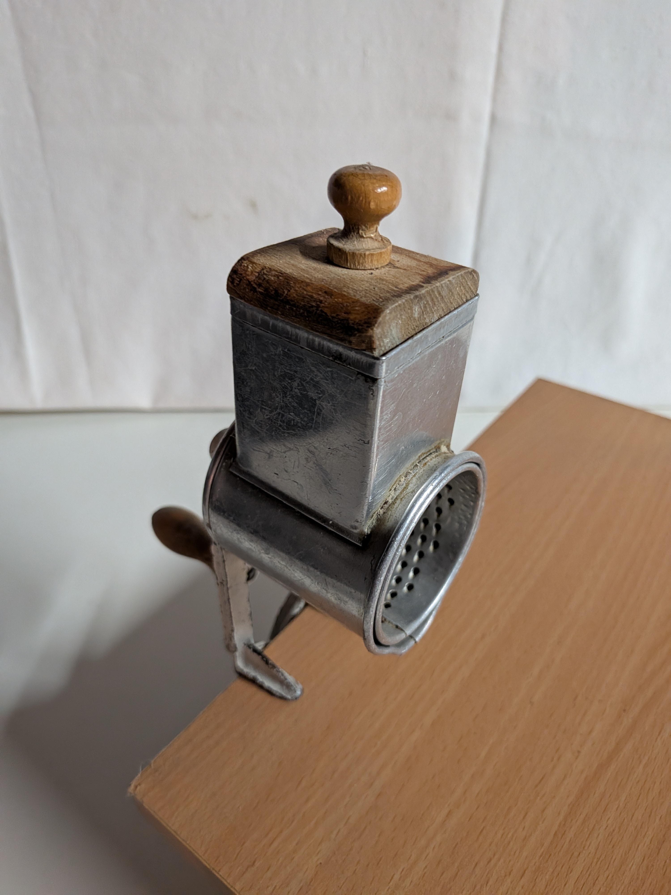
Trommelreibe / Kurbelreibe Modell 820 (Schulte, ca. 1950–1970)
Mechanische Trommelreibe des Herstellers Schulte, Modell 820. Mit austauschbarer Reibtrommel und Holzgriff – ideal zum Reiben von Käse, Nüssen oder Gemüse. Typisch für die Nachkriegszeit: robustes Metallgehäuse und langlebige Mechanik.
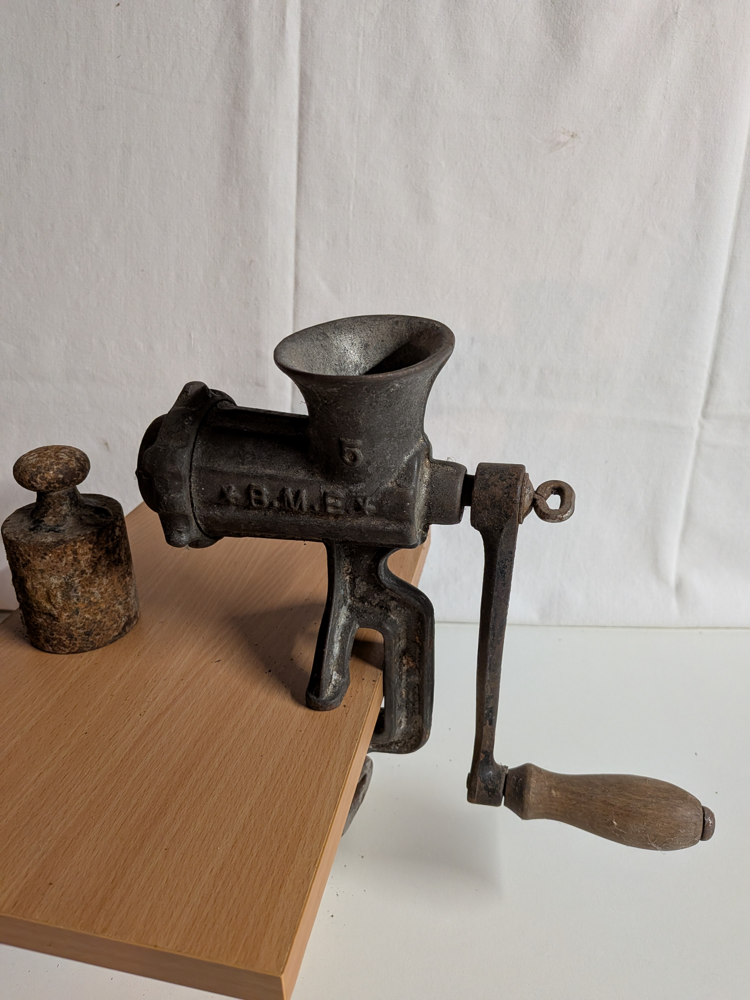
BME5 Kurbelgerät (ca. 1960–1970)
Spätes mechanisches Haushaltsgerät, Übergangszeit zu elektrischen Küchenmaschinen. Oft mit austauschbaren Einsätzen für verschiedene Schneid- und Reibfunktionen.
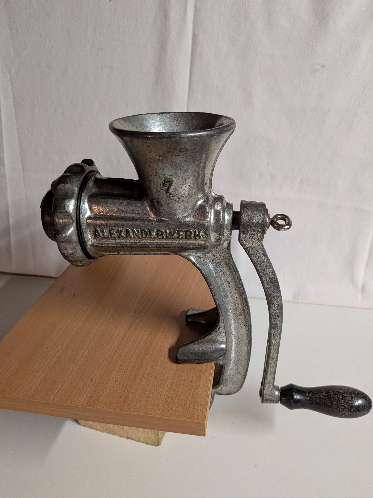
Alexanderwerk 7 (ca. 1960–1970)
Spätes Kurbelgerät der Firma Alexanderwerk. Kompakte Bauform, typisch für die 1960er Jahre – Übergang zur elektrischen Küchenmaschine.